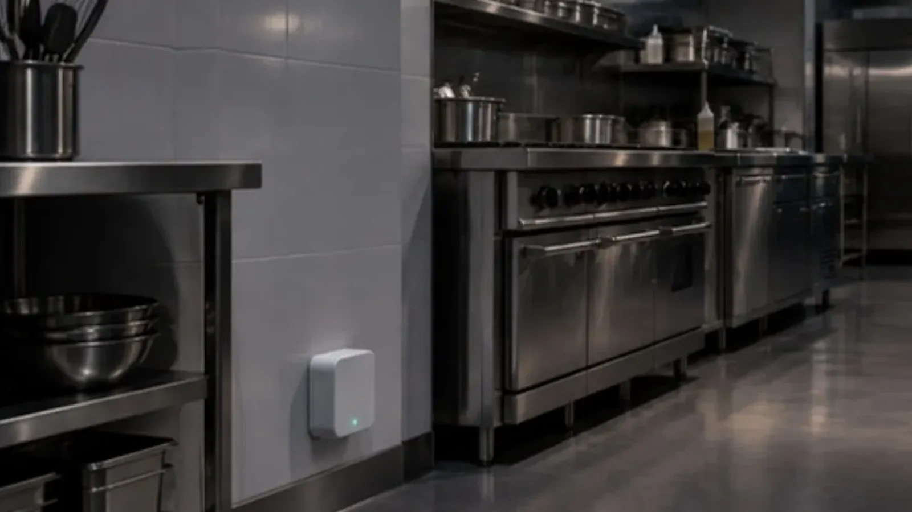
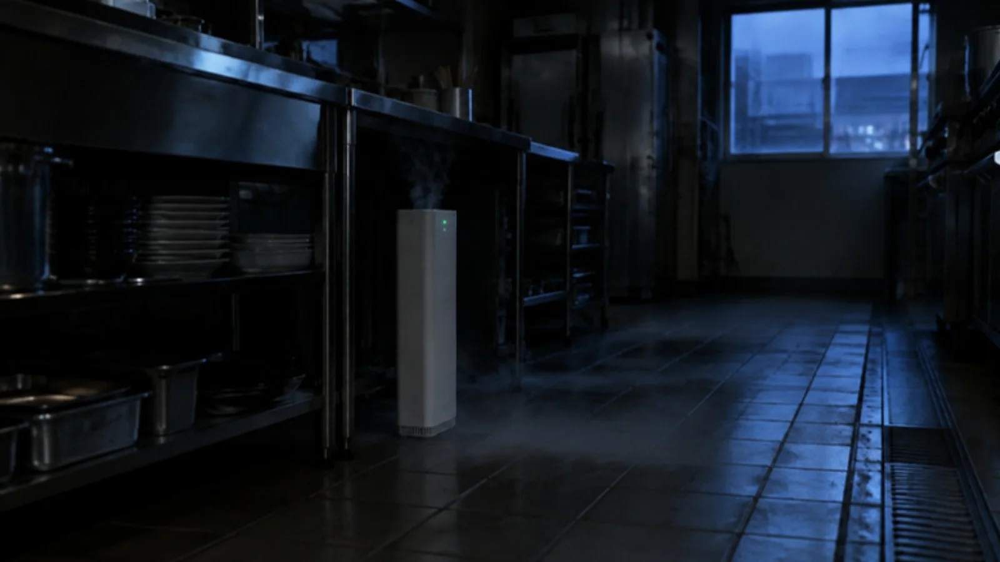
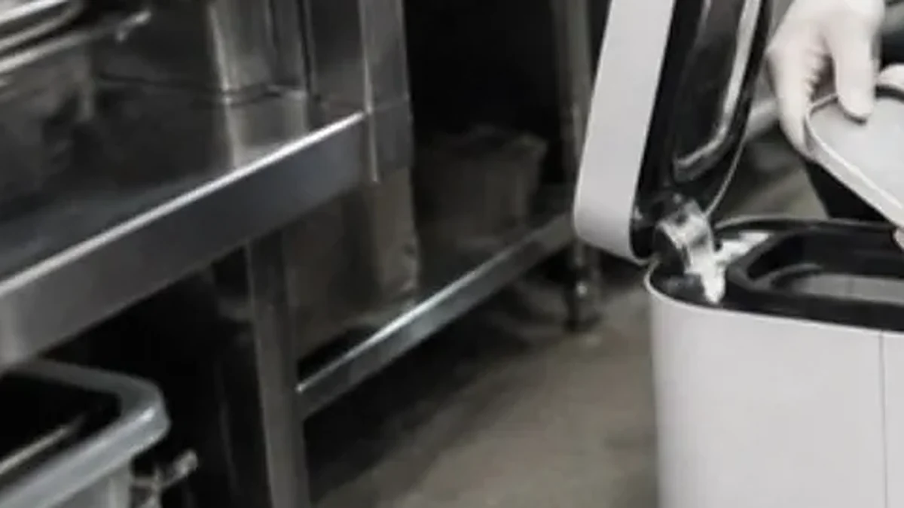

ゴキブリの体の一部やふんが、料理に入るおそれ。
清掃サービス / 害虫駆除
害虫駆除 / 飲食店・施設の厨房
人がいない夜に、
機械がゴキブリと闘う。
厨房のちょっとしたすき間に、高さ 41 cm の駆除機を置くだけ。閉店後、ゴキブリが動き出す深夜にタイマーで自動稼働します。店長さんの作業は、帰る前に換気扇を切るだけ。食器の養生も、翌朝の洗い直しもいりません。
害虫駆除機(4 週間ごと)4,290円 / 台・税別
害虫駆除 スポット20,000円〜・税別

代表の現場経験
清掃の現場を、
年間 1,000 件以上。
代表は清掃業界大手で社員として現場に立ち、その後は外部顧問として、仕組みの側から現場を見てきました。数多くの現場に携わらせていただいた経験を、厨房の衛生管理と、設置・交換の段取りと報告に込めています。
代表の経歴を読む ›- 約 15年清掃の
現場経験 - 約 1,000件以上/年年間の
現場数
台数の多い現場や広い施設にも、協力会社と連携して対応します。
件数は、代表が前職の清掃会社で社員・外部顧問として携わった現場を含みます。
お店のゴキブリに、悩まされていませんか。
- 何回駆除しても、厨房にすぐ出てくる
- 業者に頼んだのに、しばらくしたらまた出た
- 自分でやる煙タイプは手間がかかる
- 駆除のたびに休日出勤や残業が増える
- お客様の席に出てしまったことがある
- 業者が多すぎて、どこを選べばいいかわからない
見えないうちに、被害は広がります。
食品を扱うお店や施設の厨房では、害虫の対策は衛生管理の基本です。
ゴキブリは、食中毒の原因になる菌を運ぶことがあります。
客席に一匹出るだけで、口コミも客足も変わります。
暖かく水のある厨房は、ゴキブリが増えやすい場所。数匹のうちに手を打つのが近道です。
食品を扱うお店では、害虫の対策は衛生管理の基本。日ごろから続けておくことが大切です。
ヒーターで温めて、床から満たす。
駆除の効き目は、薬剤がどれだけ安定して広がるかで決まります。駆除機は薬剤プレートをヒーターで一定に温め、季節に左右されずに蒸散させます。

- 営業時間に合わせてタイマー設定
設定はスタッフが行います。閉店後の無人の時間に自動で動きます。
- ヒーターで薬剤プレートを温める
冬の冷え込みでも夏の暑さでも、蒸散する力が落ちません。
- 蒸散した薬剤が床から満ちる
厨房機器の裏、すき間の奥まで。人の手では届かない場所へ。
- 毎晩続けて効かせる
1 回きりの駆除は、あとから卵からかえった個体に効きにくい。継続稼働で、かえった後の個体まで駆除して数を減らします。
- 本体サイズ
- 高さ 410 × 幅 130 × 奥行 130 mm
- 電気代
- 1 日 7 円程度
- 方式
- ヒーター蒸散のドライ方式(特許取得)
- 薬剤
- 厚生労働省の承認を受けた医薬品の薬剤プレート(承認番号 第21066APZ00288000号)
- 交換
- 4 週間ごと・1 回 10 分程度
- 対象
- ゴキブリ
置くだけで、続けられる。
タイマーで自動運転。人の作業ではないので、担当者によるムラがありません。
無色透明で、薬剤がほとんど残らないドライ方式。翌朝の厨房をそのまま使えます。
4 週間ごとに伺い、発生の様子を見ながら薬剤プレートを交換します。
電気代は 1 日 7 円程度。何度も業者が出向く駆除より、続けやすい費用です。

4 週間ごとの交換で、切らさない。
交換の日は、厨房のどこに出ているか、増えているか減っているかを一緒に確かめます。発生の多い場所があれば、置き場所の見直しや手作業の駆除・清掃もご提案します。
よくある対策との違い。
| 市販のスプレー・煙式 | 人の手による単発の駆除 | 害虫駆除機(継続稼働) | |
|---|---|---|---|
| 効き方 | 見つけた分だけ。繁殖が追いつく | 作業した日は効く。あとから卵からかえった個体に効きにくい | 毎晩稼働して効果を一定に保つ |
| 手間 | お店のスタッフが毎回作業 | 休業日の立ち会い・食器の養生と洗い直し | 帰る前に換気扇を切るだけ |
| 品質 | 使う人しだい | 作業する人で差が出やすい | 機械のオート運転でムラがない |
料金の目安(税別)
広さ・フロア数・発生状況で変わります。正式な金額は下見のうえでお見積りします。
| メニュー | 内容 | 料金(税別) |
|---|---|---|
| 害虫駆除機 | 4 週間ごとの定期サービス(薬剤プレート交換・効果の確認) | 4,290 円 / 台 |
| 害虫駆除 スポット | 1 回の駆除作業 | 20,000 円〜 |
相談から、5 つのステップ。
- STEP 1ご相談
お店の場所・広さ・困っていることを教えてください。
- STEP 2下見・調査
出やすい場所、侵入口、厨房の動線を確かめます。
- STEP 3お見積り
台数とメニューを決めて、金額をご案内します。
- STEP 4設置・初回施工
営業時間外に設置し、タイマーを合わせます。
- STEP 54 週間ごとの訪問
交換と効果の確認。状況はその場でご報告します。
よくある質問
営業中に作業しますか?
しません。設置と交換は営業時間外か、お店の都合のよい時間に伺います。交換は 1 回 10 分程度です。
何台必要ですか?
厨房の広さと形で変わります。下見のときに置き場所と台数をご提案します。
食器や食材はしまう必要がありますか?
ドライ方式なので、食器の養生や翌朝の洗い直しは基本的に不要です。気になる食材は、ふだん通り保管庫へしまってください。
定期清掃と一緒に頼めますか?
できます。厨房や客席の定期清掃と組み合わせると、訪問をまとめられます。
まずは、厨房を見せてください。
東京都・神奈川県の飲食店・施設に伺います。1 店舗から、お気軽にどうぞ。